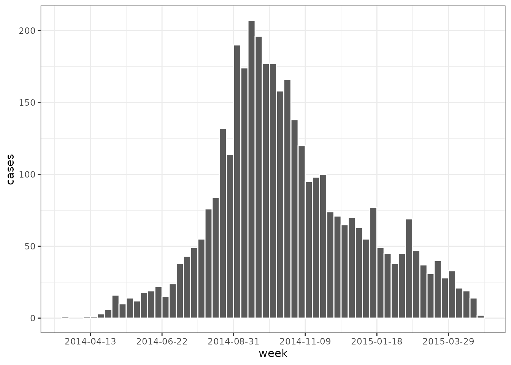
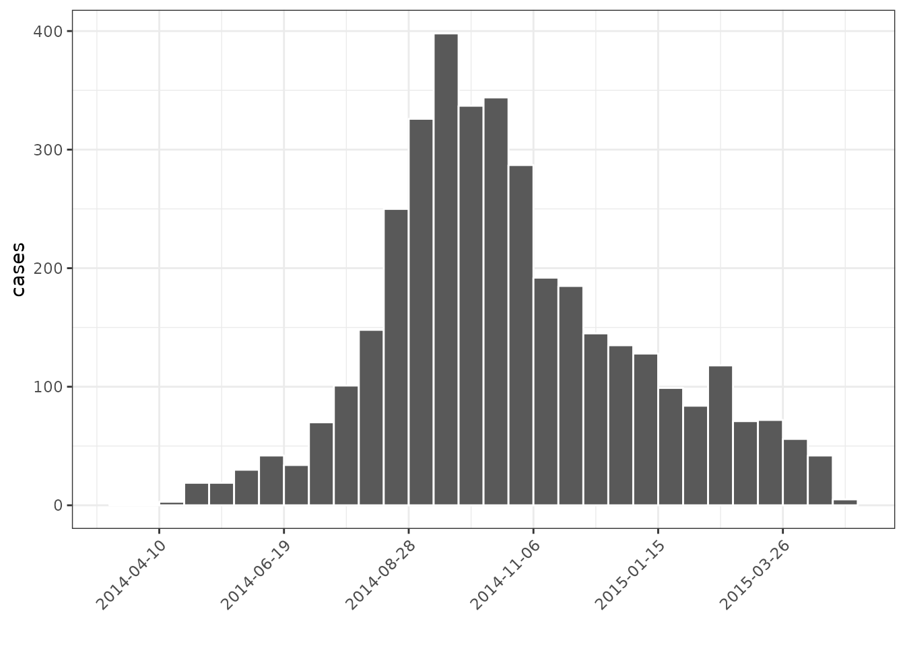
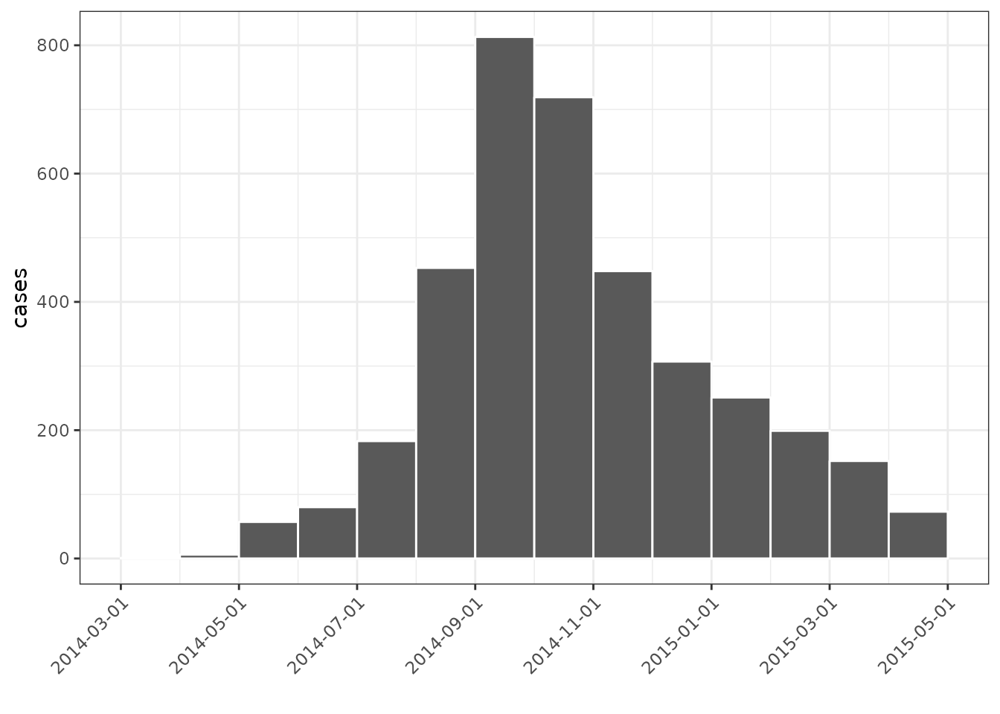
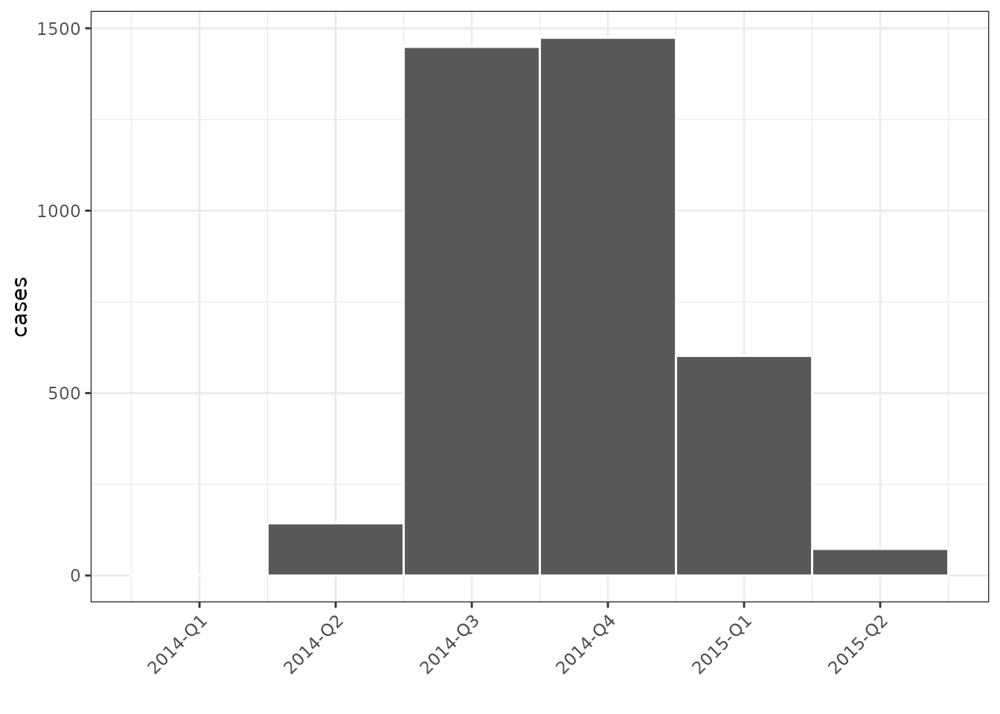
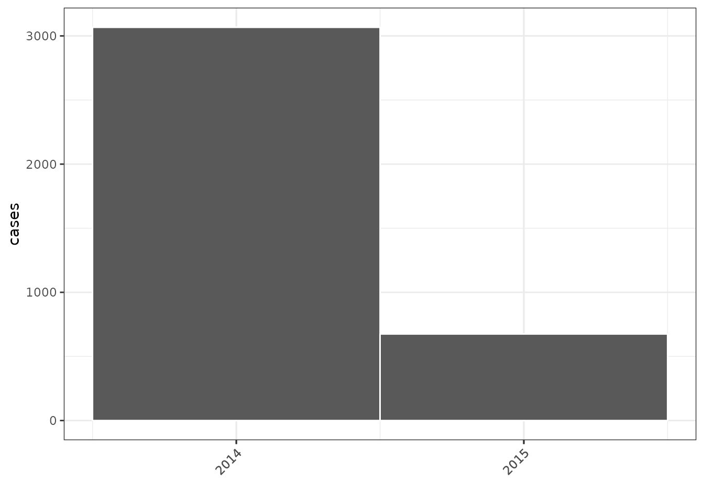
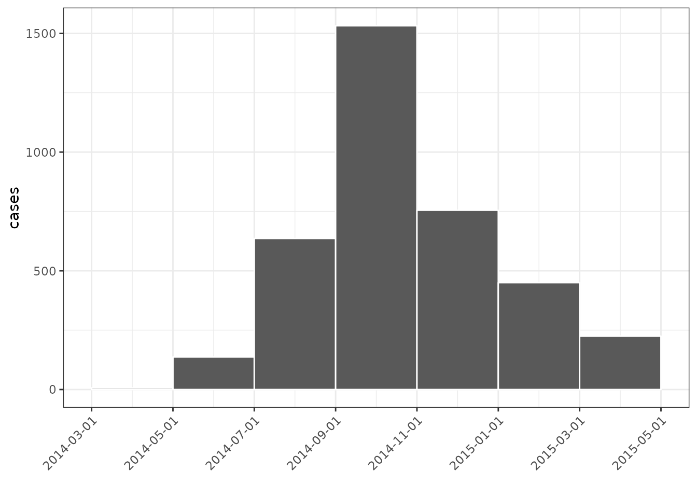
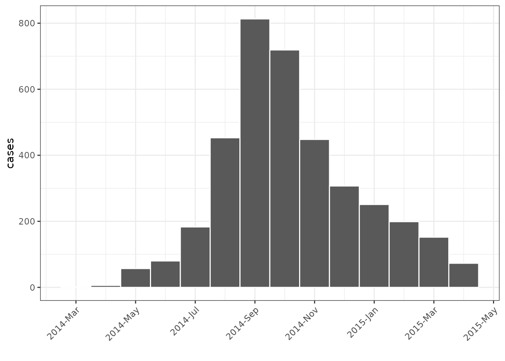

Overview
The goal of grates is to make it easy to group dates across a range of different time intervals. It defines a collection of classes and associated methods that, together, formalise the concept of grouped dates and are intuitive to use. To assist in formatting plots of grates objects we also provides x-axis scales that can be used in conjunction with ggplot2 output. Currently implemented classes are:
grates_year; and
The underlying implementation for these objects build upon ideas of Davis Vaughan and the unreleased datea package as well as Zhian Kamvar and the aweek package.
grates objects
yearweek, epiweek and isoweek
yearweek objects are stored as the number of weeks
(starting at 0L) from the date of the firstday nearest the
Unix Epoch (1970-01-01). Put more simply, the number of seven day
periods from:
- 1969-12-29 for
firstdayequal to 1 (Monday) - 1969-12-30 for
firstdayequal to 2 (Tuesday) - 1969-12-31 for
firstdayequal to 3 (Wednesday) - 1970-01-01 for
firstdayequal to 4 (Thursday) - 1970-01-02 for
firstdayequal to 5 (Friday) - 1970-01-03 for
firstdayequal to 6 (Saturday) - 1970-01-04 for
firstdayequal to 7 (Sunday)
They can be constructed directly from integers via the
new_yearweek() function but it is generally easier to use
the as_yearweek() generic. as_yearweek() takes
two arguments; x, the vector (normally a Date or POSIXt)
you wish to group, and firstday, the day of the week you
wish your weeks to start on.
The epiweek class is similar to the yearweek class
but, by definition, will always begin on a Sunday. They are stored as
the integer number of weeks (again starting at 0L) since 1970-01-04 so
internally are akin to <grates_yearweek_sunday>
objects but with the benefit of slightly more efficient implementations
for many of the associated methods.
Likewise, the isoweek class is similar to epiweek class but uses the ISO 8601 definition of a week that will always start on a Monday. Internally they are stored as the integer number of weeks since 1969-12-29.
library(grates)
# Choose some consecutive dates that begin on a Friday
first <- as.Date("2021-01-01")
weekdays(first)
#> [1] "Friday"
dates <- first + 0:9
# Below we use a Friday-week grouping (firstday = 5)
weeks <- as_yearweek(dates, firstday = 5)
(dat <- data.frame(dates, weeks))
#> dates weeks
#> 1 2021-01-01 2021-W01
#> 2 2021-01-02 2021-W01
#> 3 2021-01-03 2021-W01
#> 4 2021-01-04 2021-W01
#> 5 2021-01-05 2021-W01
#> 6 2021-01-06 2021-W01
#> 7 2021-01-07 2021-W01
#> 8 2021-01-08 2021-W02
#> 9 2021-01-09 2021-W02
#> 10 2021-01-10 2021-W02
# epiweeks always start on a Sunday
(epiwk <- as_epiweek(Sys.Date()))
#> <grates_epiweek[1]>
#> [1] "2022-W46"
weekdays(as.Date(epiwk))
#> [1] "Sunday"
# isoweeks always start on a Sunday
(isowk <- as_isoweek(Sys.Date()))
#> <grates_isoweek[1]>
#> [1] "2022-W46"
weekdays(as.Date(isowk))
#> [1] "Monday"By default plots (using ggplot2) will centre yearweek (epiweek / isoweek) labels:
library(ggplot2)
# use simulated linelist data from the outbreaks package
dat <- outbreaks::ebola_sim_clean
dat <- dat$linelist$date_of_infection
# calculate the total number for across each week
week_dat <- aggregate(
list(cases = dat),
by = list(week = as_epiweek(dat)),
FUN = length
)
head(week_dat)
#> week cases
#> 1 2014-W12 1
#> 2 2014-W15 1
#> 3 2014-W16 1
#> 4 2014-W17 3
#> 5 2014-W18 6
#> 6 2014-W19 16
# plot the output
(week_plot <-
ggplot(week_dat, aes(week, cases)) +
geom_col(width = 1, colour = "white") +
theme_bw())We can have non-centred date labels on the x_axis by utilising the associated scale_x_grates functions and explicitly specifying a format for the date labels:
week_plot + scale_x_grates_epiweek(format = "%Y-%m-%d")
Period
period objects are stored as the integer number,
starting at 0L, of periods since the Unix Epoch (1970-01-01) and a
specified offset. Here periods are taken to mean groupings of
n consecutive days.
Like with yearweek objects, period objects can be constructed
directly via a call to new_period() but more easily via the
as_period() coercion function. as_period()
takes 3 arguments; x, the vector (normally a Date or
POSIXt) you wish to group, n, the integer number of days
you wish to group, and offset, the value you wish to start
counting groups from relative to the Unix Epoch. For convenience,
offset can be given as a date you want periods to be
relative to (internally this date is converted to integer).
Note that storage and calculation purposes, offset is
scaled relative to n. I.e.
offset <- offset %% n and values of x
stored relative to this scaled offset.
# calculate the total number for across 14 day periods with no offset.
# note - 0L is the default value for the offset but we specify it explicitly
# here for added clarity
period_dat <- aggregate(
list(cases = dat),
by = list(period = as_period(dat, n = 14L, offset = 0L)),
FUN = length
)
head(period_dat)
#> period cases
#> 1 2014-03-13 to 2014-03-26 1
#> 2 2014-03-27 to 2014-04-09 1
#> 3 2014-04-10 to 2014-04-23 3
#> 4 2014-04-24 to 2014-05-07 19
#> 5 2014-05-08 to 2014-05-21 19
#> 6 2014-05-22 to 2014-06-04 30
# lower date bounds are used for the x axis
ggplot(period_dat, aes(period, cases)) +
geom_col(width = 1, colour = "white") +
theme_bw( ) +
theme(axis.text.x = element_text(angle = 45, hjust=1)) +
xlab("")
# using a date as an offset
start <- as.Date("2020-01-03")
dates <- start + 0:9
offset <- as.Date("2020-01-01")
data.frame(dates, period = as_period(dates, n = 7L, offset = offset))
#> dates period
#> 1 2020-01-03 2020-01-01 to 2020-01-07
#> 2 2020-01-04 2020-01-01 to 2020-01-07
#> 3 2020-01-05 2020-01-01 to 2020-01-07
#> 4 2020-01-06 2020-01-01 to 2020-01-07
#> 5 2020-01-07 2020-01-01 to 2020-01-07
#> 6 2020-01-08 2020-01-08 to 2020-01-14
#> 7 2020-01-09 2020-01-08 to 2020-01-14
#> 8 2020-01-10 2020-01-08 to 2020-01-14
#> 9 2020-01-11 2020-01-08 to 2020-01-14
#> 10 2020-01-12 2020-01-08 to 2020-01-14yearmonth, yearquarter and year
yearmonth, yearquarter and year objects are stored as the integer number of months/quarters/years (starting at 0L) since the Unix Epoch (1970-01-01).
As with all grates objects they they can be constructed directly from
integers via the new_yearmonth(),
new_yearquarter() and year() functions but it
is often easier to use the as_yearmonth(),
as_yearquarter() and as_year() coercion
functions.
# calculate the monthly number of cases
(month_dat <- aggregate(
list(cases = dat),
by = list(month = as_yearmonth(dat)),
FUN = length
))
#> month cases
#> 1 2014-Mar 1
#> 2 2014-Apr 6
#> 3 2014-May 57
#> 4 2014-Jun 80
#> 5 2014-Jul 183
#> 6 2014-Aug 453
#> 7 2014-Sep 813
#> 8 2014-Oct 719
#> 9 2014-Nov 448
#> 10 2014-Dec 307
#> 11 2015-Jan 251
#> 12 2015-Feb 199
#> 13 2015-Mar 152
#> 14 2015-Apr 73
# plot with centred labels
(month_plot <-
ggplot(month_dat, aes(month, cases)) +
geom_col(width = 1, colour = "white") +
theme_bw() +
theme(axis.text.x = element_text(angle = 45, hjust=1)) +
xlab(""))
# again we can have non-centred date labels by applying the associated scale
month_plot + scale_x_grates_yearmonth(format = "%Y-%m-%d")
# yearquarter works similarly
(quarter_dat <- aggregate(
list(cases = dat),
by = list(quarter = as_yearquarter(dat)),
FUN = length
))
#> quarter cases
#> 1 2014-Q1 1
#> 2 2014-Q2 143
#> 3 2014-Q3 1449
#> 4 2014-Q4 1474
#> 5 2015-Q1 602
#> 6 2015-Q2 73
ggplot(quarter_dat, aes(quarter, cases)) +
geom_col(width = 1, colour = "white") +
theme_bw() +
theme(axis.text.x = element_text(angle = 45, hjust=1)) +
xlab("")
# year also works similarly
(year_dat <- aggregate(
list(cases = dat),
by = list(year = as_year(dat)),
length
))
#> year cases
#> 1 2014 3067
#> 2 2015 675
ggplot(year_dat, aes(year, cases)) +
geom_col(width = 1, colour = "white") +
theme_bw() +
theme(axis.text.x = element_text(angle = 45, hjust=1)) +
xlab("")
month
month objects are stored as the integer number of n-month groups (starting at 0L) since the Unix Epoch (1970-01-01). Here n-months is taken to mean a ‘grouping of n consecutive months’.
<grates_month> objects can be constructed directly
from integers via the new_month() function and through
coercion via the as_month() function.
as_period() takes 2 arguments; x, the vector
(normally a Date or POSIXt) you wish to group, n, the
integer number of months you wish to group.
# calculate the bimonthly number of cases
(bimonth_dat <- aggregate(
list(cases = dat),
by = list(group = as_month(dat, n = 2L)),
FUN = length
))
#> group cases
#> 1 2014-Mar to 2014-Apr 7
#> 2 2014-May to 2014-Jun 137
#> 3 2014-Jul to 2014-Aug 636
#> 4 2014-Sep to 2014-Oct 1532
#> 5 2014-Nov to 2014-Dec 755
#> 6 2015-Jan to 2015-Feb 450
#> 7 2015-Mar to 2015-Apr 225
# by default lower date bounds are used for the x axis
(bimonth_plot <-
ggplot(bimonth_dat, aes(group, cases)) +
geom_col(width = 1, colour = "white") +
theme_bw() +
theme(axis.text.x = element_text(angle = 45, hjust=1)) +
xlab(""))
Note that the default plotting behaviour of non-centred date labels is different to that of the yearweek, yearmonth, yearquarter and year scales where labels are centred by default. To obtain centred labels you must explicitly set the format to NULL in the scale:
month_plot + scale_x_grates_yearmonth(format = NULL)
Methods and operations
For all grates objects we have added many methods and
operations to ensure logical and consistent behaviour. Where things
break down we try to provide detailed messaging explaining why errors
have occurred. Whilst this behviour is implemented for all grates
objects, below we illustrate how it manifests with epiweek objects.
# use the unique epiweeks from the earlier example
x <- week_dat$week
# min, max and range
(minx <- min(x))
#> <grates_epiweek[1]>
#> [1] "2014-W12"
(maxx <- max(x))
#> <grates_epiweek[1]>
#> [1] "2015-W17"
rangex <- range(x)
# seq method works if both `from` and `to` are epiweeks
seq(from = minx, to = maxx, by = 6L)
#> <grates_epiweek[10]>
#> [1] "2014-W12" "2014-W18" "2014-W24" "2014-W30" "2014-W36" "2014-W42"
#> [7] "2014-W48" "2015-W01" "2015-W07" "2015-W13"
# but will error informatively if `to` is a different class
try(seq(from = minx, to = 999, by = 6L))
#> Error in seq.grates_epiweek(from = minx, to = 999, by = 6L) :
#> `to` must be a <grates_epiweek> object of length 1.
# conversion of yearweek objects back to dates will return the date at the
# lower bound of each yearweek interval
dat <- head(week_dat)
transform(dat, new_date = as.Date(week))
#> week cases new_date
#> 1 2014-W12 1 2014-03-16
#> 2 2014-W15 1 2014-04-06
#> 3 2014-W16 1 2014-04-13
#> 4 2014-W17 3 2014-04-20
#> 5 2014-W18 6 2014-04-27
#> 6 2014-W19 16 2014-05-04
# addition (subtraction) of wholenumbers will add (subtract) the corresponding
# number of weeks to (from) the object
(dat <- transform(dat, plus4 = week + 4L, minus4 = week - 4L))
#> week cases plus4 minus4
#> 1 2014-W12 1 2014-W16 2014-W08
#> 2 2014-W15 1 2014-W19 2014-W11
#> 3 2014-W16 1 2014-W20 2014-W12
#> 4 2014-W17 3 2014-W21 2014-W13
#> 5 2014-W18 6 2014-W22 2014-W14
#> 6 2014-W19 16 2014-W23 2014-W15
# addition of two yearweek objects will error as the intention is unclear
try(transform(dat, willerror = week + week))
#> Error in Ops.grates_epiweek(week, week) :
#> Cannot add <grates_epiweek> objects to each other.
# Subtraction of two yearweek objects gives the difference in weeks between them
transform(dat, difference = plus4 - minus4)
#> week cases plus4 minus4 difference
#> 1 2014-W12 1 2014-W16 2014-W08 8 weeks
#> 2 2014-W15 1 2014-W19 2014-W11 8 weeks
#> 3 2014-W16 1 2014-W20 2014-W12 8 weeks
#> 4 2014-W17 3 2014-W21 2014-W13 8 weeks
#> 5 2014-W18 6 2014-W22 2014-W14 8 weeks
#> 6 2014-W19 16 2014-W23 2014-W15 8 weeks
# epiweeks can be combined with themselves but not other classes (assuming an
# epiweek object is the first entry)
c(minx, maxx)
#> <grates_epiweek[2]>
#> [1] "2014-W12" "2015-W17"
identical(c(minx, maxx), rangex)
#> [1] TRUE
try(c(minx, 1L))
#> Error in c.grates_epiweek(minx, 1L) :
#> Unable to combine <grates_epiweek> objects with other classes.